不能表示为分数a/b的形式，换言之，我们要证明2不是有理数。
不能表示为分数a/b的形式，换言之，我们要证明2不是有理数。正如西方文明里的万事万物，数学里的无穷理论起源于古希腊。有趣的是古希腊语里“无穷”这个词一词双义：一种意思是无边无际；另一种更为晦暗——“不可言传之物”。公元前6世纪的哲学家和天文学家阿那克西曼德——泰勒斯之徒、毕达哥拉斯之师，首先把无穷的概念引入了哲学。阿那克西曼德在他的宇宙学里，把无穷视为世界之基、万物之源，一种无边界无言喻的基质。一些前苏格拉底哲学的学者将阿那克西曼德视为将神的抽象概念引入希腊哲学的玄学第一人。
不管怎样，毕达哥拉斯的世界里是没有无穷这回事的。当然你还记得毕达哥拉斯认为万物皆数，即世间之物最终都可以用自然数，也就是正整数和零表示。自然数就是毕达哥拉斯的基本原子。
不过证明毕达哥拉斯错误的，正是他本人。
一个无理数！！
太讽刺了，毕达哥拉斯解释万物最终由自然数构造的理论恰恰成了他的绊脚石。在几何上，他发现没法把正方形的边与对角线的关系表达为自然数的比，信与不信都是如此。
我解释一下。
我们从边长为1单位的正方形开始看。我们把对角线的长度记为c，如下图：
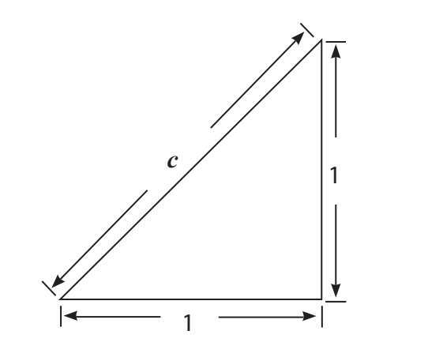
这里用到让毕达哥拉斯享誉世界的定理（也即勾股定理）啦：直角三角形里，斜边的平方等于两条直角边的平方和。
请看我们的图（参见上图），这意味着12+12=c2，因此c=
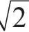
。请注意，
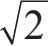
是一个简单的符号（在毕达哥拉斯眼里），表示自乘得2的数。理论上来说，我们可以画一朵花，表示平方后得2的那个数。很显然没有整数的平方是2。（1的平方是1，2的平方是4，1和2之间就没有整数了。）但是有没有分数
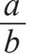
的平方是2呢？关于这个，我提醒一下，形如a/b的分式，其中a是整数（包括零），b也整数（不包括零），这样的数叫有理数。毕达哥拉斯当然乐意认为确有其数，这样就与他的世界万物由自然数构成的哲学完美契合。等着毕达哥拉斯面前山雨欲来！
我们现在要证明不能表示为分数a/b的形式，换言之，我们要证明2不是有理数。
我们用前文提过的反证法。换言之，我们首先对要证伪的这件事立个假设，也就是说存在两个数a和b，且
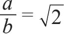
。我们要阐述这个假设在逻辑上会引出矛盾的结果。我们从假设a/b是个最简分数开始，也就是说，已经约分到分子最小（例如21/14和15/10都可以写成3/2）。只要证明没有最简分数是2的平方根，就能证明
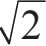
是无理数。关于分数的这个假设大有用处且合情合理，因为每个分数都可以写成最简形式，若没有最简分数等于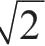
就没有任何分数等于。我们假设最简分数a/b=
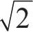
，稍微调整一下就是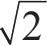
b=a，两边平方就得到2b2=a2。显然a2是偶数。因此我们可以把a=2k代入等式，得到：
2b2=（2k）2
2b2=4k2
b2=2k2
我们看到b2是偶数，也就是说b也是偶数。
然而，如果a和b都是偶数，就意味着a/b不是最简分数（分子和分母都能被2整除）。这就与我们的原始假设矛盾了。换言之，我们证明了
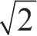
不是两个整数之比。结论：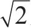
必为无理数。证毕。
但是我们证明这个有什么用呢？
几何上的解释是这样的：我们很容易构造一个直角边长是1单位的直角三角形，并画出它的斜边，但是我们没法在有限步数之内量出斜边的长度。
三角形的斜边——这么简单的一个几何学的概念——违反了毕达哥拉斯哲学的基本原则：万物皆由自然数构成。可以想见，伴随着发现的喜悦，毕达哥拉斯感到巨大的失落。
我们也可以换个法子，在计算器上按出看看，显示的是1.4142136。把这个数自乘一下，如果它确实是2的平方根，那自乘后就应该确实得到2。但是并非如此！（如果你特别好奇可以自己试试。）我们没得到2的原因是计算器给出的只是的近似值。即使我们买的是最先进的计算器，给出的结果也只是小数点后多几位，仍然是
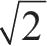
的近似值，而非确实的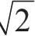
。如果换成用计算机来做这个，就得到以下答案：
1.41421356237309504880168872420969807
要是你雨夜无所事事，就手动把这个数自乘一下看结果是不是2。你会发现得到的依然只是近似2的数，不是2。
解释一下
以下是理解无理数的一个好办法：当我们把
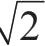
写成1.4142135…时，很难解释这省略号（…）代表什么。这数的无理之处在于：一是小数部分无穷延长；二是没有循环节。如果一个数的小数点后的数位数有限，那它显然就是有理数。也就是说，它必然能写成形如a/b的分数。例如，0.174271=174271/1000000。
有循环节的无穷小数也是有理数，虽然有点不好理解。我们看看示例，对于r=0.123123123123…这个数有很简单的循环节，易证它是有理数，也就是说，可以写成a/b的形式。
我们把r乘上1000（“1000”是根据循环节的长度选的）再减去r。
1000r-r=999r=123.123123123…-0.123123123…=123
因此，r=123/999，可以化简为41/333，显然是两个整数之比。如果你除一下这两个数，就能得到0.123123123…。
但是，我们对
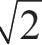
没法这么搞，因为它无穷不循环。我们可以找到577/408之类的数，它相当接近 ，是个很好的近似值，但也只是近似。很有意思，连毕达哥拉斯本人都拒绝承认
，是个很好的近似值，但也只是近似。很有意思，连毕达哥拉斯本人都拒绝承认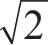
是个数。在毕达哥拉斯看来
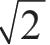
只是个符号，代表自乘得2的那个数，这很重要。正如我之前所言，我们可以画一朵花代替这个符号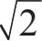
，然后说这花的平方就是2。传统的符号与花有什么不同吗？或许我们应该在数学里多画点花，更多花朵，更多欢乐。现有的符号与我们的花朵之间唯一的区别就是花朵画起来不方便。事实上，我们对用来表达的符号并无兴趣，我们想要的是其平方为2的那个数。可惜我们无能为力，因为无论小数点后取多少位都不够。我们得写无穷位数，这样就办不到了。
西奥多罗斯（公元前465-公元前398）在毕达哥拉斯过世30年后出生，是柏拉图的私人数学教师，证明了3，5，6，7，8，10，11，12，13，14，15和17的平方根都不是有理数。柏拉图很崇拜西奥多罗斯，在对话录《泰阿泰德篇》[1]里提到了他，以及平方根是无理数的发现。关于他止步于17的原因有分歧。在对话录里，泰阿泰德仅仅告诉苏格拉底说西奥多罗斯停在这儿了。常见的说法是，西奥多罗斯画出了如今以他名字命名的三角形的螺旋，继续画下去，就能发现他停止的原因。西奥多罗斯螺旋如下图所示。
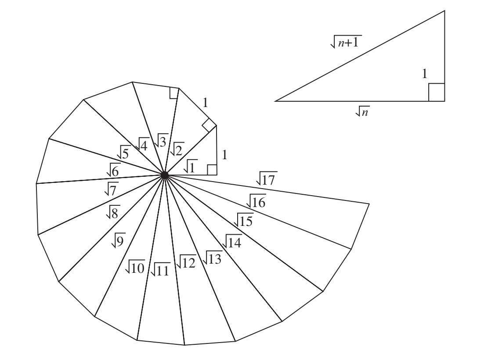
动动脑筋
1）证明3的平方根是无理数。
2）试证任何整数的平方根要么是整数，要么是无理数。（换言之，除了完全平方数4，9，16，25，…以外，任何整数的平方根都是无理数。）
好啦。毕达哥拉斯断定不存在平方为2的数的时候，他是有点“过分”了。确实有平方为2的数呀，而且是无理数。尽管没法全写出来，但如今我们知道在数学里是怎么简便处理这些数了。对于数学中无理数的理论基础，主要归功于3位数学家——理查德·戴德金（1831-1916）、卡尔·魏尔斯特拉斯（1815-1897）和格奥尔格·康托尔（1845-1918）。请务必看清：处理这些数并非易事。考虑一下，例如
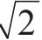
和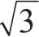
怎么做加法，它们两个的小数形式都是无穷不循环的呢。怎么把
1.41421356237309504880168872420969807…（即
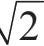
）和
1.73205080756887729352744634150587236…（即
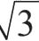
）加起来？
我们在学校里学到的加法的基本原则是从最右数位开始加。但是我们找不到，因为它有无穷位呢！怎么办？我说过了，毕达哥拉斯拒绝接受无理数是数这件事并不可鄙。
很多人认为，毕达哥拉斯发现无理数乃是数学史上最重要的大发现[2]。
传说，毕达哥拉斯让门徒保守通过正方形对角线与边的关系发现无理数这个秘密，但是其中一名门徒——希帕索斯背弃承诺（是出于门规或政治原因尚不可知），将秘密公之于众。传说中还说希帕索斯被逐出门，甚至还说他被淹死在海里（他在希腊诸岛出游，终未返回）。另一个说法：其实是希帕索斯本人发现了无理数，不关毕达哥拉斯的事。
在毕达哥拉斯过世2000多年后，康托尔展示了“几乎所有”实数都是无理数。（其中包括数学上至关重要的两个数：欧拉常数e以及圆周长与直径之比π。）
说明与练习
我保证过本书所用的不过是数学里基础的四则运算，但是“规矩”不破坏又有什么意思？现在到时候啦。用对数运算[3]来证明无理数最方便了。例如，我们看log23，也就是以2为底3的对数，证明一下它是无理数。首先我们假设它等于分数m/n：
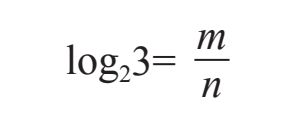
根据对数的定义和幂法则，能推出2m/n=3，以及（2m/n）n=3n，因此2m=3n。
但是，2的幂等于3的幂又断乎不可能：2的幂永远是偶数，3的幂永远是奇数。我们得出了矛盾的结果，换言之，没有这样的m和n使得
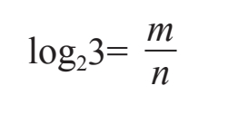
这意味着m/n不是有理数，则log23一定是无理数。
五动脑筋题
1）证明黄金比例[4]是无理数。
2）毕达哥拉斯学派的标志是正五边形里的五角星。
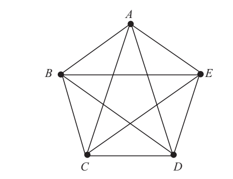
证明正五边形的对角线与边长之比是无理数。进一步证明它不是别的无理数，正是Φ（见上题）。也就是说，正五边形的对角线与边长之比是黄金比例！
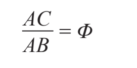
“离经叛道”的无理数，竟然隐藏在自己的徽章里，幸亏毕达哥拉斯不知道啊！
毕达哥拉斯学派徽章的进阶版是这样的：
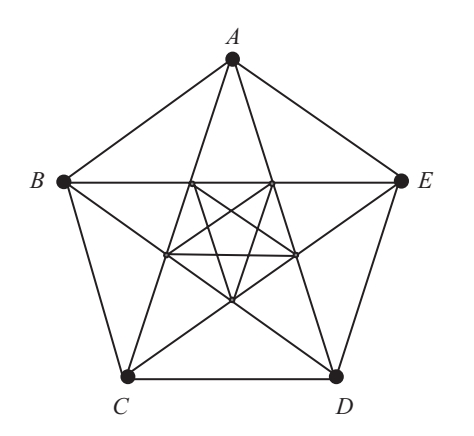
一层一层，不停进阶，永无止境！
3）0.07007000700007…是有理数吗？
4）0.123456789101112…是有理数吗？
5）由斐波那契数列（此数列从0和1开始，后一个数是前两个数之和）0，1，1，2，3，5，8，13，21，34，55，…生成的数0.01123581321345589144…是有理数吗？
[1]《泰阿泰德篇》是柏拉图关于自然知识的对话录，写于公元前369年。
[2]毕达哥拉斯除了发现无理数外，还对数学有个重大贡献，那就是引入了“证明”这回事，这跟当今的做法很相似了。
[3]万一忘了，我来提醒你一下：对数就是指数的逆函数，也就是说，如果by=x，那么logbx=y。换言之，给定x的对数就是另外一个给定的底数b自乘多少次能得到x。例如：1000就是103，所以log101000=3。同理，log264=6是因为26=64。
[4]两个数如果它们的比等于它们的和与较大之数之比［即，当a＞b，如果a/b=（a+b）/a，则a与b是黄金比例］，两个数呈黄金比例。黄金比例用Φ表示。